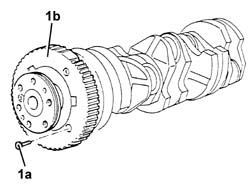

1024A28 Crankshaft FLYWHEEL for rpm and timing sensor - Replace with crankshaft removed
- Path
- Procedures > 10 ENGINE > 1024 CRANKSHAFT AND FLYWHEEL > 1024A CRANKSHAFT > 1024A28 Crankshaft FLYWHEEL for rpm and timing sensor - Replace with crankshaft removed
- Kind
- repair procedure (removal / refitting; the operation number is the code)
- Applies to
- engines: 2.0 TB, 2.4 20V, 3.0 V6, 3.2 V6; all production periods
- Interactive page
- https://sloeber94.github.io/elrnDB-lThss/en/#/259907
Applies to: engines: 2.4 20V; all production periods
 Removing
Removing
 Refitting
Refitting1. Undo the bolts (1a) and remove the phonic wheel for the rpm and timing sensor (1b) from the crankshaft.

Applies to: engines: 2.4 20V; all production periods
Refitting
Removing- Place the flywheel for the rpm and timing sensor back in its housing and secure it to the crankshaft tightening the bolts to the recommended torque.
 | Value - daNm | Fastening | Component | Ø |
|---|---|---|---|---|
1a | (Engine crankcase side) 0.9 -1.2 | Bolt pre-treated with eslok | ENGINE RPM/TIMING SENSOR TOOHTED RING GEAR | M6 |
Applies to: engines: 2.0 TB; all production periods
Removing
Refitting1. Undo the bolts (1a) and remove the phonic wheel for the rpm and timing sensor (1b) from the crankshaft.
Applies to: engines: 2.0 TB; all production periods
Refitting
Removing- Place the flywheel for the rpm and timing sensor back in its housing and secure it to the crankshaft tightening the bolts to the recommended torque.
| Value - daNm | Fastening | Component | Ø |
|---|---|---|---|---|
1a | 1.0 -1.2 (Crankshaft side) | Bolt | ENGINE RPM/TIMING SENSOR TOOHTED RING GEAR | M6 |
Applies to: engines: 3.0 V6, 3.2 V6; all production periods